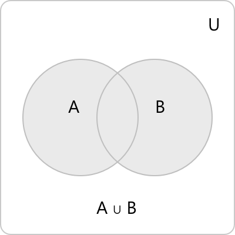
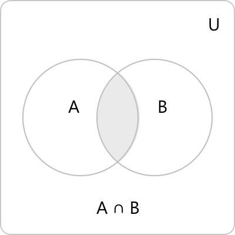
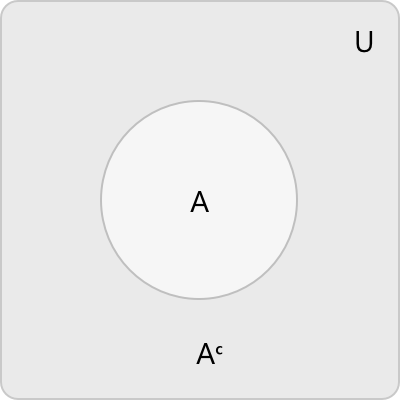
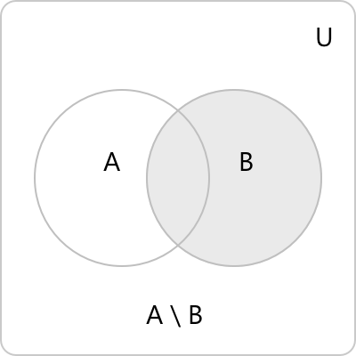
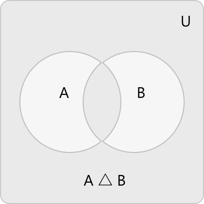
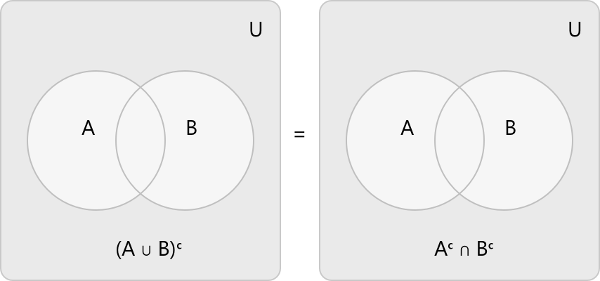
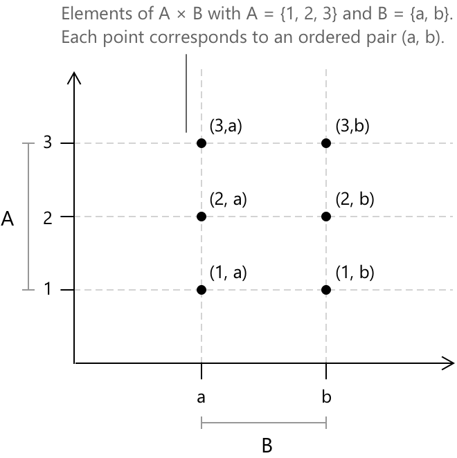

Множини
Вступ
Множина вважається одним із найфундаментальніших понять у математиці. Замість того, щоб бути визначеною через простіші поняття, вона розглядається як первинна ідея. Множина — це чітко визначена сукупність відмінних об'єктів, які називаються елементами або членами. Термін «чітко визначена» означає, що для будь-якого заданого об'єкта можна однозначно визначити, чи належить цей об'єкт до сукупності. Множини зазвичай позначаються великими літерами, такими як \( A \), \( B \) або \( C \), тоді як їхні елементи позначаються малими літерами. Запис \( x \in A \) вказує на те, що об'єкт \( x \) є елементом множини \( A \). Заперечення, що записується як \( x \notin A, \) означає, що \( x \) не є елементом \( A \). Існує два стандартних методи опису множини. Перший передбачає пряме перелічення її елементів у фігурних дужках:
\[ A = \{1, 2, 3, 4\} \]
Другий, більш гнучкий підхід — це нотація побудови множини, яка вказує властивість, що характеризує всі елементи множини. Вертикальна риска ( \mid ) читається як «такий, що», а вираз праворуч від неї визначає умови, яким має задовольняти елемент для належності до множини.
\[ A = \{ x \in \mathbb{Z} \mid x > 0, \; x \leq 4 \} \]
Цей запис визначає \( A \) як множину всіх цілих чисел \( x \) таких, що \( x > 0 \) і \( x \leq 4 \), тобто:
\[ A = \{1, 2, 3, 4\} \]
Множина, що не містить жодного елемента, називається порожньою множиною і позначається \( \emptyset \) або еквівалентно \( \{\} \). Порожня множина відіграє в теорії множин роль, аналогічну ролі нуля в арифметиці.
Універсальна множина
Часто ми визначаємо головну сукупність, що містить усі об'єкти, які ми розглядаємо. Ця сукупність називається універсальною множиною, або універсумом, і позначається як \( U \). Усі множини в цьому контексті є підмножинами \( U \). Вибір \( U \) залежить від ситуації; наприклад, в елементарній теорії чисел часто \( U = \mathbb{Z} \), тоді як у реальному аналізі зазвичай обирають \( U = \mathbb{R} \).
Універсальна множина забезпечує основу для однозначного визначення поняття доповнення множини, як показано в розділі про операції над множинами.
Потужність скінченних множин
Потужність множини \( A \), що позначається \( |A| \), означає кількість елементів, які вона містить. Для порожньої множини \( |\emptyset| = 0 \). Дві скінченні множини мають однакову потужність тоді і тільки тоді, коли вони містять однакову кількість елементів. Потужність тісно пов'язана з операціями над множинами, розглянутими в цьому розділі. Потужність булеана (множини всіх підмножин) скінченної множини \( A \) з \( n \) елементами визначається як:
\[ |\mathcal{P}(A)| = 2^n \]
Цей результат встановлено в розділі про підмножини та булеани нижче. Для декартового добутку двох скінченних множин \( A \) та \( B \) потужність становить:
\[ |A \times B| = |A| \cdot |B| \]
Це випливає з того, що кожен елемент \( A \) утворює пару з кожним елементом \( B \), в результаті чого отримуємо \( |A| \cdot |B| \) відмінних впорядкованих пар.
При формуванні об'єднання двох скінченних множин пряме додавання їхніх потужностей призводить до надлишкового підрахунку елементів, що належать обом множинам. Принцип включення-виключення забезпечує правильний підрахунок:
\[ |A \cup B| = |A| + |B| - |A \cap B| \]
Це можна перевірити, зауваживши, що кожен елемент \( A \cup B \) підраховується один раз у \( |A| + |B| \), за винятком елементів у \( A \cap B \), які підраховуються двічі. Віднімання \( |A \cap B| \) виправляє цей надлишок. Принцип включення-виключення поширюється на три множини, де чергування додавання та віднімання стає складнішим:
\[ |A \cup B \cup C| = |A| + |B| + |C| - |A \cap B| – |A \cap C| - |B \cap C| + |A \cap B \cap C| \]
Елементи, що належать рівно одній множині, підраховуються один раз. Елементи, що належать рівно двом множинам, додаються двічі та віднімаються один раз. Елементи, що належать усім трьом множинам, додаються тричі, віднімаються тричі та додаються ще один раз, що в результаті дає підрахунок одиниці для кожного випадку.
Підмножини та булеани
Множина \( A \) визначається як підмножина \( B \), що позначається \( A \subseteq B \), якщо кожен елемент \( A \) також є елементом \( B \). Формально:
\[ A \subseteq B \iff \forall x, \, x \in A \Rightarrow x \in B \]
Дві множини рівні тоді і тільки тоді, коли кожна з них є підмножиною іншої. Цей критерій подвійного включення є стандартним підходом для встановлення рівності множин у математиці:
\[ A = B \iff A \subseteq B \text{ та } B \subseteq A \]
Якщо \( A \subseteq B \) і \( A \neq B \), то \( A \) називається строгою підмножиною \( B \), що позначається \( A \subsetneq B \). У цій ситуації в \( B \) існує принаймні один елемент, який не належить до \( A \). Порожня множина є підмножиною будь-якої множини. Включення \( \emptyset \subseteq A \) виконується для будь-якої множини \( A \), оскільки імплікація \( x \in \emptyset \Rightarrow x \in A \) є тривіально істинною.
Булеан множини \( A \), що позначається \( \mathcal{P}(A) \), складається з усіх підмножин \( A \), включаючи як \( \emptyset \), так і саму множину \( A \). Коли \( A \) містить \( n \) елементів, булеан \( \mathcal{P}(A) \) містить рівно \( 2^n \) елементів. Наприклад, якщо \( A = \{a, b, c\} \), то:
\[ \mathcal{P}(A) = \{\emptyset,\, \{a\},\, \{b\},\, \{c\},\, \{a,b\},\, \{a,c\},\, \{b,c\},\, \{a,b,c\}\} \]
У цьому випадку булеан містить \( 2^3 = 8 \) елементів, що відповідає загальній формулі.
Розподіли
Розподілом множини \( A \) називають сім'ю непорожніх підмножин \( A \), які є попарно розрізними і чиє об'єднання дорівнює \( A \). Формально, сім'я множин \( {A_i}_{i \in I} \) є розподілом \( A \), якщо виконуються наступні три умови:
\[ \begin{align} A_i \neq \emptyset & \quad \forall \, i \in I \\[6pt] A_i \cap A_j = \emptyset & \quad \forall \, i \neq j \\[6pt] \bigcup_{i \in I} A_i &= A \end{align} \]
Підмножини \( A_i \) називають блоками або клітинами розподілу. Кожен елемент \( A \) належить рівно одному блоку. Як конкретний приклад, множина цілих чисел \( \mathbb{Z} \) розподіляється на множину парних цілих чисел і множину непарних цілих чисел. Ці два блоки є розрізними, обидва непорожні, а їхнє об'єднання становить всю множину \( \mathbb{Z} \).
Розподіли тісно пов'язані з відношеннями еквівалентності. Для заданого відношення еквівалентності на \( A \) класи еквівалентності, які воно породжує, утворюють розподіл \( A \). І навпаки, будь-який розподіл \( A \) визначає відношення еквівалентності, якщо оголосити два елементи еквівалентними тоді, коли вони належать до одного блоку. Цей зв'язок між розподілами та відношеннями еквівалентності детально розглянуто в статті про відношення еквівалентності.
Операції над множинами
Для двох заданих множин, \( A \) та \( B \), класичні операції теорії множин генерують нові множини шляхом систематичного комбінування або протиставлення їхніх елементів.
Об'єднанням \( A \) та \( B \) є множина всіх елементів, які належать принаймні одній із двох множин:

\[ A \cup B = \{x \mid x \in A \text{ або } x \in B\} \]
У цьому контексті термін «або» є невиключним. Елемент, що належить і до \( A \), і до \( B \), включається лише один раз, оскільки множини не містять повторюваних елементів.
Перетином \( A \) та \( B \) називають множину елементів, які є членами обох множин:

\[ A \cap B = \{x \mid x \in A \text{ та } x \in B\} \]
Якщо \( A \cap B = \emptyset \), то множини є розрізними, тобто вони не мають спільних елементів.
Доповненням \( A \) відносно універсальної множини \( U \) є множина всіх елементів у \( U \), які не є членами \( A \):

\[ A^c = \{x \in U \mid x \notin A\} \]
У деяких текстах доповнення позначають як \( \overline{A} \) або \( U \setminus A \). Доповнення визначається вибором \( U \), тому одна й та сама множина \( A \) може мати різні доповнення в різних універсальних множинах.
Різницею \( A \) та \( B \), що записується як \( A \setminus B \), є множина елементів, які належать до \( A \), але не належать до \( B \):

\[ A \setminus B = \{x \mid x \in A \text{ та } x \notin B\} \]
Операція різниці не є симетричною. Взагалі, \( A \setminus B \neq B \setminus A \). Ця операція пов'язана з доповненням тотожністю \( A \setminus B = A \cap B^c \), яка виконується в будь-якій універсальній множині, що містить і \( A \), і \( B \).
Симетричною різницею \( A \) та \( B \), що позначається \( A \triangle B \), є множина елементів, які належать рівно одній із двох множин, але не обом одночасно.

\[ A \triangle B = (A \setminus B) \cup (B \setminus A) \]
Еквівалентна характеристика задається наступним виразом, який явно показує зв'язок з об'єднанням та перетином.
\[ A \triangle B = (A \cup B) \setminus (A \cap B) \]
Симетрична різниця є комутативною та асоціативною, а також задовольняє рівності \( A \triangle A = \emptyset \) та \( A \triangle \emptyset = A \). Разом із перетином вона наділяє сукупність усіх підмножин заданої множини структурою булевого кільця.
Властивості операцій над множинами
Операції, визначені вище, задовольняють сукупність алгебраїчних тотожностей, які виконуються для будь-яких множин \( A \), \( B \) та \( C \) усередині універсальної множини \( U \).
Об'єднання та перетин є комутативними операціями: порядок, у якому дві множини об'єднуються, не впливає на результат.
\[\begin{align} A \cup B &= B \cup A \\[6pt] A \cap B &= B \cap A \end{align}\]
Обидві операції також є асоціативними, що означає, що при об'єднанні трьох множин групування операндів не має значення.
\[\begin{align} (A \cup B) \cup C &= A \cup (B \cup C) \\[6pt] (A \cap B) \cap C &= A \cap (B \cap C) \end{align}\]
Об'єднання та перетин дистрибутивні відносно один одного, подібно до дистрибутивного закону арифметики.
\[\begin{align} A \cap (B \cup C) &= (A \cap B) \cup (A \cap C) \\[6pt] A \cup (B \cap C) &= (A \cup B) \cap (A \cup C) \end{align}\]
Порожня множина виступає як нейтральний елемент для об'єднання, а універсальна множина виступає як нейтральний елемент для перетину: об'єднання будь-якої множини з одним із цих елементів залишає вихідну множину незмінною.
\[\begin{align} A \cup \emptyset &= A \\[6pt] A \cap U &= A \end{align}\]
Двоїсто, порожня множина обнуляє перетин, а універсальна множина обнуляє об'єднання в тому сенсі, що об'єднання будь-якої множини з цими елементами дає поглинаючий елемент, а не вихідну множину.
\[ \begin{align} A \cap \emptyset &= \emptyset \\[6pt] A \cup U &= U \end{align} \]
Доповнення множини взаємодіє з об'єднанням та перетином згідно з наступними законами. Кожен елемент \( U \) належить або \( A \), або її доповненню, і жоден елемент не належить обом одночасно. Подвійне взяття доповнення повертає вихідну множину.
\[\begin{align} A \cup A^c &= U \\[6pt] A \cap A^c &= \emptyset \\[6pt] (A^c)^c &= A \end{align}\]
Ці тотожності становлять основу булевої алгебри та зустрічаються в логіці, комбінаториці та інформатиці з по суті такою самою структурою.
Закони де Моргана
Серед раніше розглянутих властивостей дві є особливо помітними, оскільки вони характеризують взаємодію між доповненням, об'єднанням та перетином. Вони відомі як закони де Моргана, названі на честь британського математика Августуса де Моргана:
\[\begin{align} (A \cup B)^c &= A^c \cap B^c \\[6pt] (A \cap B)^c &= A^c \cup B^c \end{align}\]
Перший закон стверджує, що доповнення об'єднання дорівнює перетину доповнень. Зокрема, елемент не належить до \( A \cup B \) тоді і тільки тоді, коли він не належить ні до \( A \), ні до \( B \), що еквівалентно належності як до \( A^c \), так і до \( B^c \).

Другий закон є аналогічним: елемент не входить у перетин \( A \cap B \) тоді і тільки тоді, коли він відсутній принаймні в одній із множин, що поміщає його в \( A^c \cup B^c \).
Ці закони природно узагальнюються на довільні скінченні колекції множин. Для множин \( A_1, A_2, \ldots, A_n \):
\[\begin{align} \left(\bigcup_{i=1}^{n} A_i\right)^c &= \bigcap_{i=1}^{n} A_i^c \\[6pt] \left(\bigcap_{i=1}^{n} A_i\right)^c &= \bigcup_{i=1}^{n} A_i^c \end{align}\]
Закони де Моргана є фундаментальними як у математиці, так і в логіці. У логіці висловлювань вони відповідають еквівалентностям:
\[ \neg(P \lor Q) \equiv \neg P \land \neg Q \] \[ \neg(P \land Q) \equiv \neg P \lor \neg Q \]
що демонструє тісний зв'язок між алгебраїчною структурою множин та структурою логічних зв'язок.
Приклад
Нехай \( U = \{1, 2, 3, 4, 5, 6, 7, 8, 9, 10\} \) — універсальна множина, та визначимо наступні дві підмножини:
\[ \begin{align} A &= \{1, 2, 3, 4, 6\} \\[6pt] B &= \{2, 4, 6, 8, 10\} \end{align} \]
Об'єднання та перетин обчислюються безпосередньо з означень:
\[ \begin{align} A \cup B &= \{1, 2, 3, 4, 6, 8, 10\} \\[6pt] A \cap B &= \{2, 4, 6\} \end{align} \]
Доповнення відносно \( U \) — це елементи, що виключені з кожної множини:
\[ \begin{align} A^c &= \{5, 7, 8, 9, 10\} \\[6pt] B^c &= \{1, 3, 5, 7, 9\} \end{align} \]
Тепер перевіримо перший закон Де Моргана. Доповнення об'єднання дорівнює:
\[ (A \cup B)^c = U \setminus (A \cup B) = \{5, 7, 9\} \]
Обчислення перетину доповнень дає:
\[ \begin{align} A^c \cap B^c &= \{5, 7, 8, 9, 10\} \cap \{1, 3, 5, 7, 9\} \\[6pt] &= \{5, 7, 9\} \end{align} \]
Дві множини збігаються, що підтверджує перший закон Де Моргана.
Перевіримо принцип включення-виключення, використовуючи потужності множин.
\[ |A| = 5 \quad |B| = 5 \quad |A \cap B| = 3 \]
\[ |A \cup B| = 5 + 5 – 3 = 7 \]
Підрахунок елементів \( A \cup B = \{1, 2, 3, 4, 6, 8, 10\} \) безпосередньо підтверджує, що \( |A \cup B| = 7 \).
Нарешті, обчислимо симетричну різницю та перевіримо її зв'язок з іншими операціями.
\[ A \triangle B = (A \setminus B) \cup (B \setminus A) \]
Дві різниці дорівнюють \( A \setminus B = \{1, 3\} \) та \( B \setminus A = \{8, 10\} \), отже:
\[ A \triangle B = \{1, 3, 8, 10\} \]
Еквівалентна характеристика через об'єднання та перетин дає:
\[ \begin{align} (A \cup B) \setminus (A \cap B) &= \{1, 2, 3, 4, 6, 8, 10\} \setminus \{2, 4, 6\} \\[6pt] &= \{1, 3, 8, 10\} \end{align} \]
Два вирази збігаються, як і очікувалося.
Декартів добуток
Дано дві множини \( A \) та \( B \), тоді Декартів добуток, що позначається \( A \times B \), визначається як множина всіх впорядкованих пар \( (a, b) \), таких що \( a \) належить до \( A \) і \( b \) належить до \( B \):
\[ A \times B = \{(a, b) \mid a \in A,\, b \in B\} \]
Поняття впорядкованої пари підкреслює фундаментальну асиметрію: \( (a, b) \) та \( (b, a) \) є різними, якщо тільки \( a \) не дорівнює \( b \). Дві впорядковані пари рівні тоді і тільки тоді, коли їхні відповідні компоненти рівні:
\[ (a, b) = (a’, b’) \iff a = a’ \text{ та } b = b’ \]
Відповідно, загалом \( A \times B \neq B \times A \). Якщо множина \( A \) містить \( m \) елементів, а множина \( B \) містить \( n \) елементів, то \( A \times B \) містить \( mn \) елементів. Поширеним прикладом є \( \mathbb{R} \times \mathbb{R} \), що часто позначається \( \mathbb{R}^2 \), що представляє множину всіх пар дійсних чисел і відповідає Декартовій площині.

Декартів добуток узагальнюється на будь-яку скінченну колекцію множин. Для множин \( A_1, A_2, \ldots, A_n \) їхній Декартів добуток — це множина всіх впорядкованих \( n \)-кортежів:
\[ A_1 \times A_2 \times \cdots \times A_n = \{(a_1, a_2, \ldots, a_n) \mid a_i \in A_i \, \text{для кожного } \, i = 1, \ldots, n\} \]
\( n \)-кортеж \( (a_1, \ldots, a_n) \) — це впорядкована послідовність з \( n \) елементів, і два \( n \)-кортежі рівні тоді і тільки тоді, коли всі відповідні компоненти рівні. Якщо всі множини ідентичні, тобто \( A_i = A \) для кожного \( i \), добуток позначається \( A^n \). Простір \( \mathbb{R}^n \), який є фундаментальним у лінійній алгебрі та реальному аналізі, є \( n \)-кратним Декартовим добутком \( \mathbb{R} \) самої на себе, а його елементами є \( n \)-кортежі дійских чисел.
Впорядкована пара
Попереднє обговорення використовувало впорядковану пару як інтуїтивне поняття. Для більшості цілей цього достатньо, але формально повний виклад теорії множин вимагає, щоб кожен математичний об'єкт, включаючи впорядковані пари, міг бути виражений виключно через множини. Неформально, впорядкована пара \( (a, b) \) позначає пару об'єктів, де перша компонента — це \( a \), а друга — \( b \). Однак це інтуїтивне розуміння не є формальним означенням, оскільки воно розглядає порядок як примітивне поняття, а не виводить його з аксіом теорії множин. Суворий підхід вимагає означення впорядкованої пари виключно через множини. Куратовський запропонував стандартне розв'язання, запропонувавши наступне означення:
\[ (a, b) = \{\{a\},\, \{a, b\}\} \]
У цьому означенні впорядкована пара \( (a, b) \) представлена як множина, що містить два елементи: однелементну множину \( \{a\} \) та невпорядковану пару \( \{a, b\} \). Різниця між двома компонентами закодована в структурі множини: \( a \) з'являється в обох елементах, тоді як \( b \) з'являється лише в одному.
Це означення обґрунтоване наступним результатом, який підтверджує, що воно точно відображає передбачені властивості впорядкованих пар.
\[ (a, b) = (c, d) \implies a = c \text{ та } b = d \]
Щоб перевірити цю властивість, припустимо, що \( \{\{a\}, \{a, b\}\} = \{\{c\}, \{c, d\}\} \). Слід розглянути два випадки: або \( a = b \), або \( a \neq b \).
Якщо \( a = b \), то \( \{a, b\} = \{a\} \), отже ліва частина стає \( \{\{a\}\} \), одноелементною множиною. Для рівності права частина також має бути одноелементною, що вимагає \( \{c\} = \{c, d\} \), звідси \( c = d \). Єдиний елемент з кожного боку має збігатися, отже \( \{a\} = \{c\} \), і таким чином \( a = c \). Отже, оскільки \( b = a = c = d \), звідси випливає, що \( a = c \) та \( b = d \).
Якщо \( a \neq b \), то ліва частина містить два різні елементи: \( \{a\} \) та \( \{a, b\} \). Однелементна множина \( \{a\} \) має відповідати або \( \{c\} \), або \( \{c, d\} \) у правій частині. Якщо \( \{a\} = \{c, d\} \), то \( c = d = a \), що призвело б до \( \{c\} = \{c, d\} \), в результаті чого справа була б одноелементна множина, що суперечить наявності двох різних елементів зліва. Отже, \( \{a\} = \{c\} \), тому \( a = c \). Звідси випливає, що \( \{a, b\} = \{c, d\} = \{a, d\} \), і оскільки \( a \neq b \), має бути \( b = d \).
В обох випадках \( a = c \) та \( b = d \), як і вимагалося. Обернене твердження є очевидним: якщо \( a = c \) та \( b = d \), то дві множини є ідентичними шляхом підстановки.